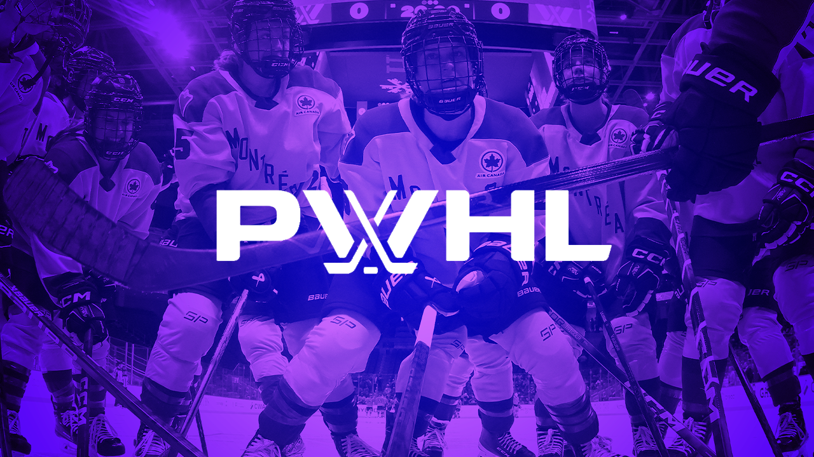

Encuentra información de tus jugadoras favoritas
WALTER CUP
La Walter Cup es el trofeo anual de la Professional Women's Hockey League (PWHL) en su temporada 2025-26, que enfrenta a los mejores equipos en una serie final. La final de 2026, presentada por Scotiabank, enfrenta a Montreal Victoire contra Ottawa Charge, comenzando el 14 de mayo de 2026, tras eliminar a Minnesota y Boston respectivamente.
EQUIPOS
Para la temporada 2025-26, la PWHL se compone de ocho equipos tras la incorporación de Seattle y Vancouver, ofreciendo un alto nivel de hockey femenino profesional. Los equipos son: Boston Fleet, Minnesota Frost, Montreal Victoire, New York Sirens, Ottawa Charge, Toronto Sceptres, Seattle Torrent y Vancouver Goldeneyes.
PATROCINADORES
La PWHL cuenta con un sólido grupo de patrocinadores fundadores y corporativos, destacando Bauer, CCM, Aero, Aeroplan, Aveeno, Barbie, DoorDash y EA Sports. Además, han firmado alianzas estratégicas con e.l.f. Cosmetics, Molson (patrocinio de camisetas), BIC (rasuradora oficial en Canadá) y Global Industrial (suministros industriales).